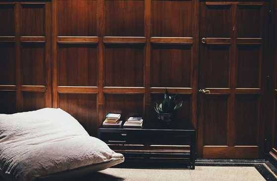
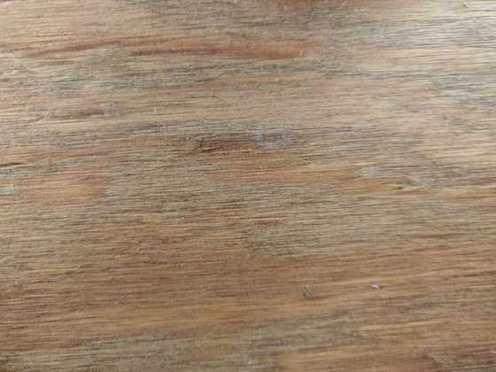
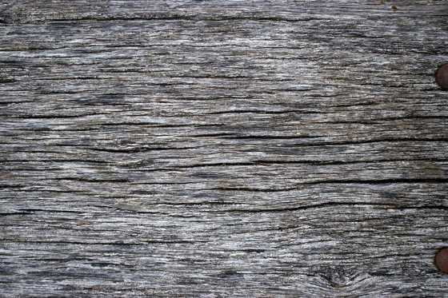
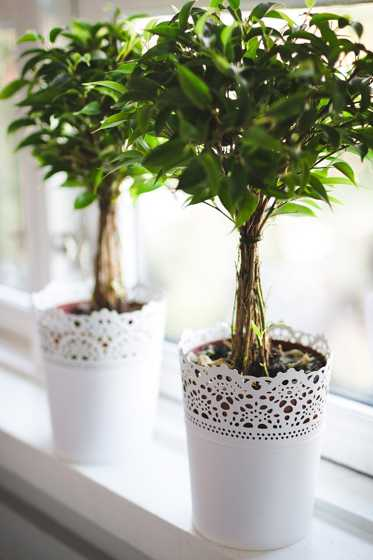
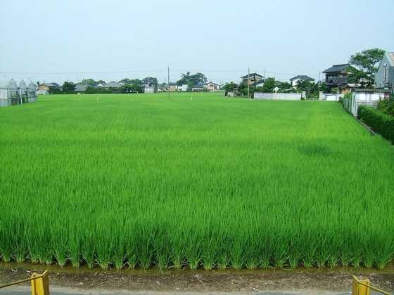
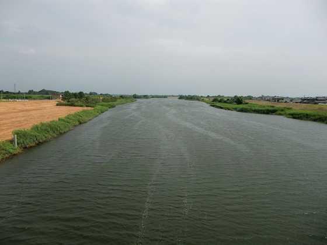
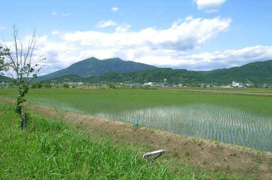
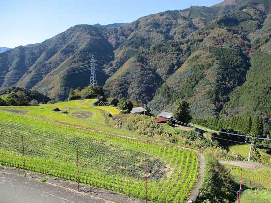
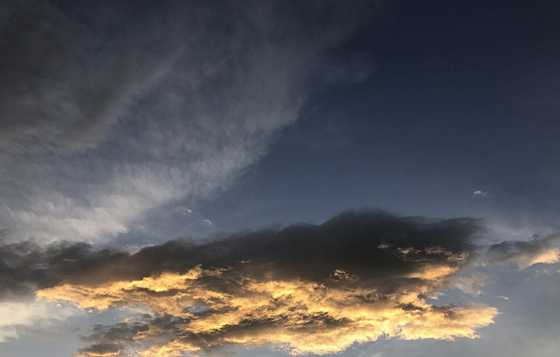

木のぬくもりに、手仕事のひと息。
大工の手仕事と自然素材に、日常のなかで触れられる場所。世代を越えて、気兼ねなく立ち寄れるカフェです。
〒300-2703 茨城県常総市小保川1427-3(小島工務店 本社敷地内)
アクセスInstagram
お店の由来と想い
カフェ杢いちは、常総市の小島工務店が本社敷地内に開いたカフェです。同社にとって飲食事業は創業以来初めての挑戦で、2026年8月にグランドオープンしたと発表されています。
出発点は、職人の高齢化で大工が手を動かす機会が減り、技術が途絶えかねないという危機感。大工の手仕事や自然素材に、日常で触れられる場所をつくることが目的の一つとされています。
もう一つは「誰もが立ち寄れる居場所」。子育て世代や一人暮らしの高齢者が孤立しないよう、世代を越えて気兼ねなく来られる空間を目指しています。木育インストラクターが常駐し、箸づくりや組手の鍋敷きづくりなどのワークショップも予定されています。
建物は35席のバリアフリー平屋で、ショールームも兼ね、内装には地元の御影石や筑波石などが使われています。
出典: 小島工務店公式サイトのニュース記事「常総市に職人の手仕事×木育「カフェ杢いち」誕生」(kojimakoumuten.jp/news/24802/)。店名「杢いち」の由来は確認できていないため記載していません。





口コミ(イメージ例)
以下は制作側が作成したイメージ例であり、実在のお客様の声ではありません。
木の香りがして、ゆっくり座っていられるカフェです。子ども連れでも気兼ねなく過ごせそうだと感じました。
ランチのあとにスイーツまで楽しみたくなる店。建築にちなんだ名前のお菓子の話も、会話のきっかけになりそうです。
一人でも入りやすく、静かにひと息つける場所。そんな居場所としての使い方を想像しました。


